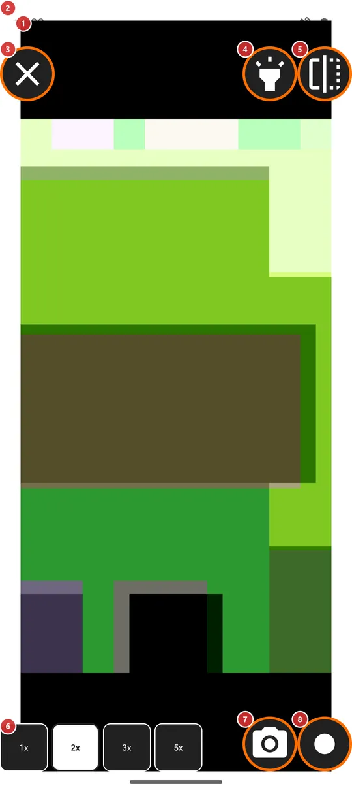
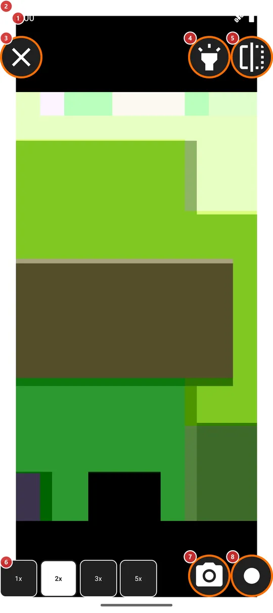

Mirror
What this is for
The mirror shows the front camera full screen inside a bright field that lights your face, like the lamp around a make-up mirror. Use it to check your face or hair, and to take a quick photo or video of yourself.


In this order
- Open Mirror from the programs menu, the programs panel or a launcher shortcut. It is switched on by default on a phone with a front camera. The first time, allow the camera when asked. Your picture 1 appears inside the bright field 2.
- Choose how close you want to be with the zoom buttons 6. The mirror opens at 2x the first time and afterwards at the step you used last.
- Switch the bright field off and on with the Front flashlight button 4 if the light is too strong or you do not need it.
- Press Flip image 5 to switch between the mirror view and the view other people have of you.
- Take a photo with 7, or start and stop a video with 8. The first video asks for the microphone.
- Press Close mirror 3 when you are done. The camera is released at once.
The elements
Picture and light
1Mirror pictureYour face from the front camera, shown the way a real mirror shows it.
The front camera fills the screen. At first the picture is flipped sideways like a mirror, so left is left as you see yourself. The screen stays awake while the mirror is open.
The camera permission is asked on the first entry. If you refuse, the mirror closes with the message that it cannot open. On a device without a front camera it does not open at all.
2Bright fieldA white frame around the picture that lights your face.
While the backlight is on, the window is raised to full brightness and the white field around the picture works like the lamp around a make-up mirror. Only the brightness of this window is raised, never the brightness setting of the phone. With the backlight off the field disappears and the window returns to the brightness your phone normally has.
Controls in the corners
3Close mirrorLeaves the mirror and lets go of the camera.
It sits in the top-left corner. If a video is being recorded, the recording is stopped and still saved. The zoom, the flip and the backlight are remembered for the next time.
4Front flashlightSwitches the bright white field on and off without leaving the screen.
The field is on by default. With it on, the window is at full brightness and your face is lit; with it off, the screen around the picture is black and the phone uses its normal brightness. Your choice is remembered. The button carries the name of the Front flashlight program, because the field is the same idea: the screen as a lamp.
5Flip imageSwaps between the mirror view and the view other people have of you.
At first you see yourself as in a mirror, with left and right swapped. Press the button to see the picture the other way round, the way a camera shows you to others; press again to go back. Only what you see changes: photos and videos are saved as the camera captured them. The choice is remembered.
6Zoom presetsFour buttons, 1x, 2x, 3x and 5x, bring your face closer.
The active step is shown in bold with inverted colors. The mirror opens at 2x the first time, and afterwards at the step you used last. On most front cameras every step above 1x is digital, so the picture gets coarser as the number grows. The zoom stays when you start a recording.
Photo and video
7Take photoTakes a photo of what the front camera sees.
The photo is saved in the folder you chose for the photos of the in-app camera. If you chose none, or the chosen resource is not a folder on the device, it goes to the Camera folder of the phone. A short message confirms the save. The button is grayed out while a shot is being saved, so a double press does no harm. A photo taken with the phone on its side is saved the right way up.
8Record videoStarts and stops a video recording from the front camera.
The first press starts the recording and the button turns into a recording symbol; press it again to stop. The first recording asks for the microphone; if you refuse, the video is recorded without sound. After stopping, the button waits for a moment while the file is finished, and then a message confirms the save. The video goes to the folder chosen for video recording, or to the Camera folder of the phone when none is chosen or the chosen resource is not a folder on the device.